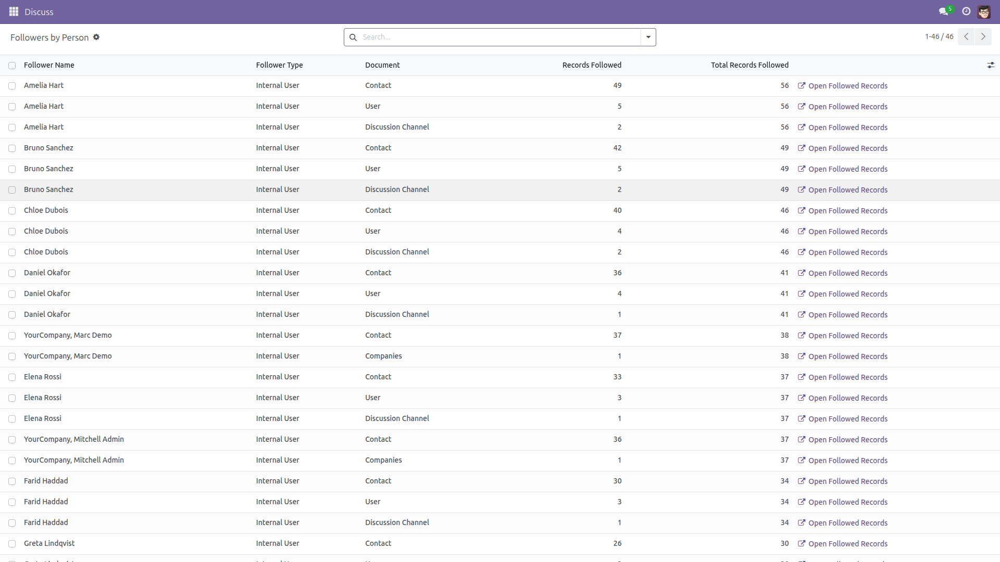
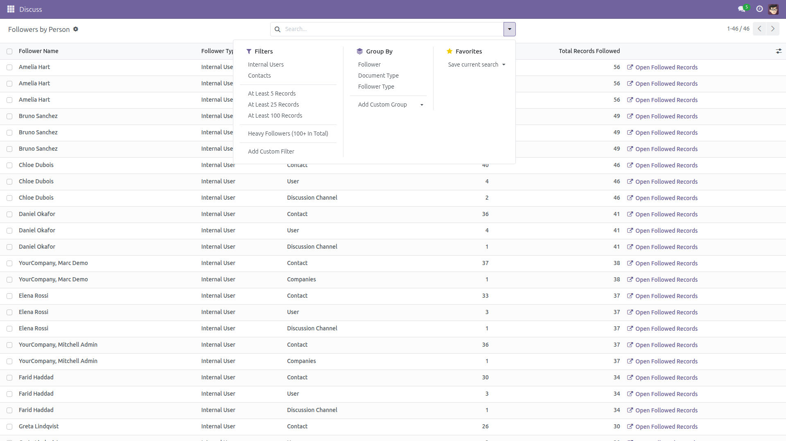
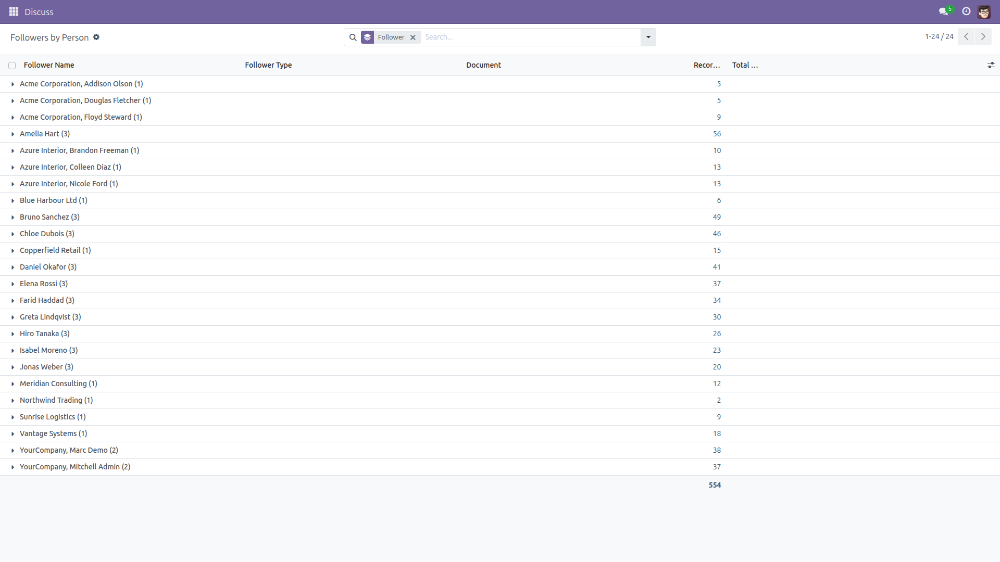
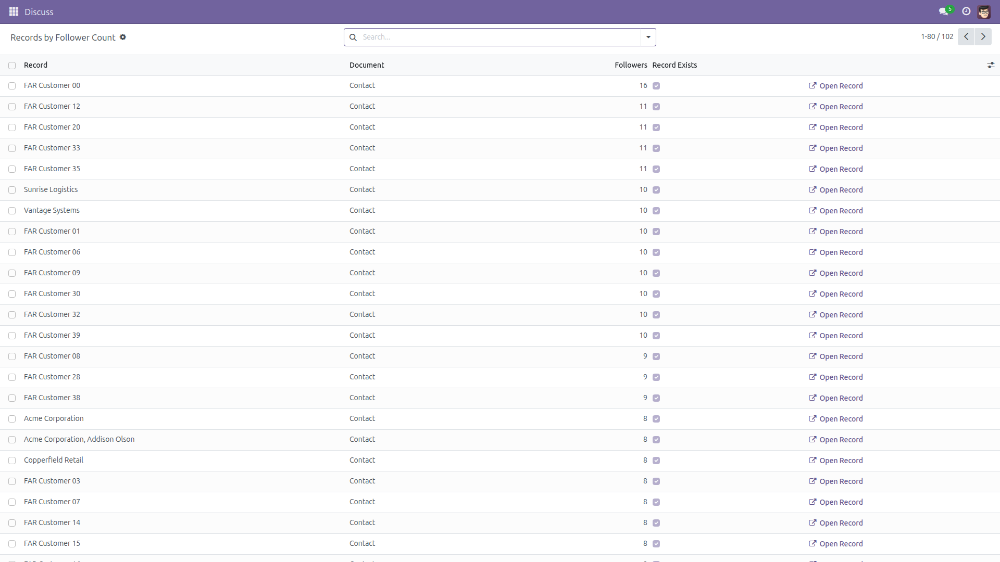

Followers Audit Report
Why does everyone get so many notifications?
Follower subscriptions pile up quietly on every model in Odoo, and there is no single place to look at them. This module adds two read-only reports over mail.followers: who follows the most records, and on which document types, and which records have an unusual number of followers.
Free and open source (LGPL-3), Odoo 14.0 through 19.0.
- Followers by Person — one line per contact and document type, with the number of records followed on that type and the total across all types.
- Records by Follower Count — the records with the most followers first, so the document that mails half the company is easy to spot.
- Internal users vs contacts — a filter that separates colleagues with a user account from plain address-book contacts and portal users.
- Minimum-count filters — ready-made thresholds (5 / 25 / 100 records followed, 5 / 10 / 25 followers per record) plus a free “at least N” input on both reports.
- Filter and group by document type — see how the subscriptions split between contacts, users, channels or any other model.
- Drill into the real records — one click opens the followed records, or the single record, in its own standard view.
- Pairs with unsubscribing, never replaces it — the reports link you to the record, where Odoo’s standard chatter Followers button removes a follower. This module deletes nothing.
- Aggregated, ranked and limited by the database —
read_group over mail.followers with the ranking and the LIMIT pushed into SQL, so a database with millions of follower rows never builds millions of rows in memory just to show the top of them. Partner names, model labels and record names are resolved in bulk; there is no per-record loop.
- Administrator only — restricted to the Administration / Settings group (
base.group_system), because follower data spans every model in the database.
Screenshots

Followers by Person: the heaviest followers first, with the number of records they follow per document type and in total.

Ready-made filters: internal users, contacts, at least 5 / 25 / 100 records, heavy followers — and grouping by follower, document type or follower type.

Grouped by follower: one row per person, with the total number of subscriptions summed for you.

Records by Follower Count: the documents that notify the most people, with a one-click link to the record itself.
Installation
- Copy the module into your addons path, or install it from the Apps list.
- Open Apps, remove the “Apps” filter, search for Followers Audit Report and click Install.
- Only the standard
mail module is required; it is already installed on every Odoo database that has a chatter.
Configuration
- No configuration is needed — both reports work as soon as the module is installed.
- Access is restricted to the Administration / Settings group. No other user, internal or portal, can read the reports.
- Optional: each run ranks at most 2 000 followers (resp. 2 000 records) and stops there — the limit is applied by the database, not after loading everything. To change it, set the system parameter
followers_audit_report.line_limit (Settings → Technical → System Parameters) to another number, or to 0 for no limit at all. When the cap is reached, the report title says so, for example Records by Follower Count (top 2000).
Usage
- Go to Settings → Followers Audit → Followers by Person. The list opens with the heaviest followers first.
- Filter on Internal Users or Contacts, on a document type, or type a number in Records on this document type (at least).
- Group by Follower for one line per person, or by Document Type to see where the subscriptions live.
- Click Open Followed Records on a line to open those records in their own view. Open a record, then use the chatter’s Followers button to unsubscribe someone — that is Odoo’s standard, safe way to do it.
- Go to Settings → Followers Audit → Records by Follower Count for the other angle: the records with the most followers, with Open Record on every line.
- Select all and use Export to take either report into a spreadsheet.
What this module does not do
- It never writes: no follower row, no record, no user, no subscription is created, changed or deleted. There is no mass-unsubscribe button here on purpose — unsubscribing happens in the record’s chatter, one record at a time, where you can see what you are doing.
- Each report is a snapshot, rebuilt every time you open the menu. It is not a live view and it is not stored.
- Follower rows can outlive the record they point at, or point at a model whose module was uninstalled. Those lines are reported honestly with Record Exists unticked and cannot be opened — they are shown, not cleaned up.
- Internal User means the contact owns a non-portal user account (archived accounts included). Portal and public users are reported as contacts.
- Counts come from the follower rows, which carry no access rules of their own. A record your own rights hide from you is therefore still counted — but it is shown as Document #id, flagged with Record Exists unticked, and cannot be opened from the report. Only the count is visible, never the content.
Version notes
Identical behaviour on every supported series (14.0 – 19.0). Follower rows without a partner (the channel followers that existed in 14.0) are excluded, since they do not notify a person.
License: LGPL-3 · Source on GitHub · Issues and contributions welcome.